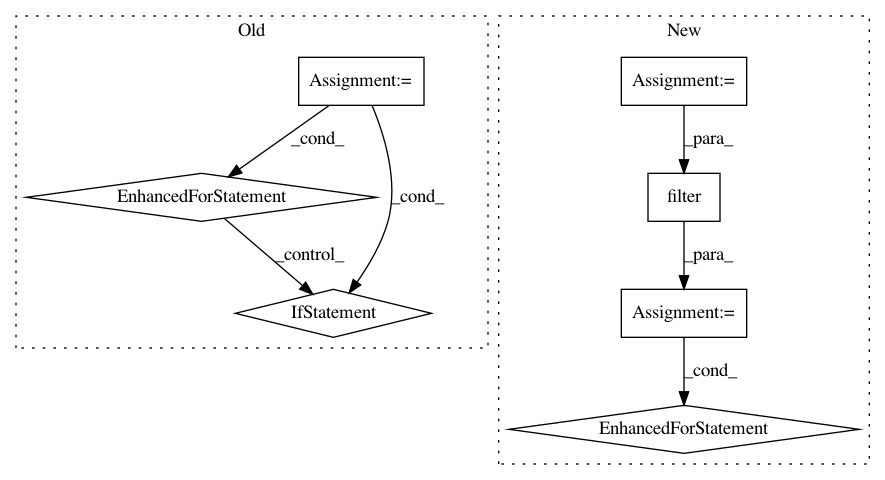

bf9599809214cbc3082eb7f39c0ad3155822a2c5,src/python/twitter/pants/tasks/jvm_compile/scala/zinc_analysis.py,ZincAnalysis,split,#ZincAnalysis#Any#Any#,172
Before Change
internal_api_splits = []
external_api_splits = []
for naive_internal_apis, external_apis, split in \
zip(naive_internal_api_splits, naive_external_api_splits, splits):
internal_apis = defaultdict(list)
for k, vs in naive_internal_apis.iteritems():
if k in split:
internal_apis[k] = vs // Remains internal.
else:
external_apis[representatives[k]] = vs // Externalized.
internal_api_splits.append(internal_apis)
external_api_splits.append(external_apis)
apis_splits = []
for args in zip(internal_api_splits, external_api_splits):
apis_splits.append(APIs(args))
After Change
// Split apis.
// The splits, but expressed via class representatives of the sources (see above).
representative_splits = [filter(None, [representatives.get(s) for s in srcs]) for srcs in splits]
representative_to_internal_api = {}
for src, rep in representatives.items():
representative_to_internal_api[rep] = self.apis.internal.get(src)
// Note that the keys in self.apis.external are classes, not sources.
internal_api_splits = self._split_dict(self.apis.internal, splits)
external_api_splits = self._split_dict(self.apis.external, representative_splits)
// All externalized deps require a copy of the relevant api.
for external, external_api in zip(external_splits, external_api_splits):
for vs in external.values():
for v in vs:
if v in representative_to_internal_api:
external_api[v] = representative_to_internal_api[v]
apis_splits = []
for args in zip(internal_api_splits, external_api_splits):
apis_splits.append(APIs(args))
In pattern: SUPERPATTERN
Frequency: 3
Non-data size: 7
Instances
Project Name: pantsbuild/pants
Commit Name: bf9599809214cbc3082eb7f39c0ad3155822a2c5
Time: 2014-02-12
Author: benjy@foursquare.com
File Name: src/python/twitter/pants/tasks/jvm_compile/scala/zinc_analysis.py
Class Name: ZincAnalysis
Method Name: split
Project Name: nipy/dipy
Commit Name: 0344c6f86136ab8a352e19074af8098dbab88f03
Time: 2018-05-17
Author: bramshq@gmail.com
File Name: dipy/align/streamlinear.py
Class Name:
Method Name: remove_clusters_by_size
Project Name: cmu-db/ottertune
Commit Name: 9e9c9c7510b6b50c221cefdde9d30c3b058a2620
Time: 2019-12-05
Author: dvanaken@cs.cmu.edu
File Name: server/website/website/models.py
Class Name: SessionKnobManager
Method Name: get_knobs_for_session